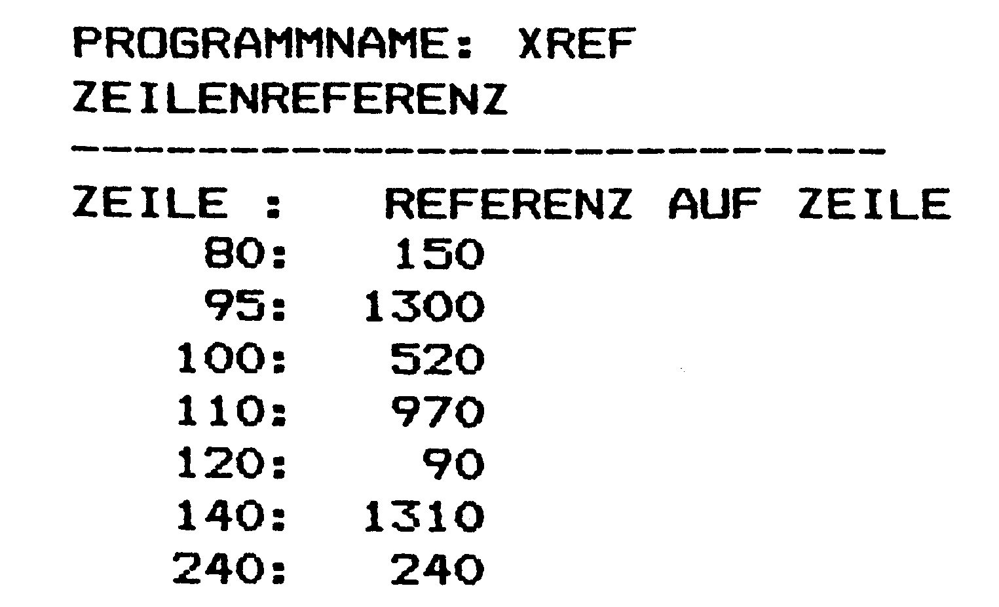
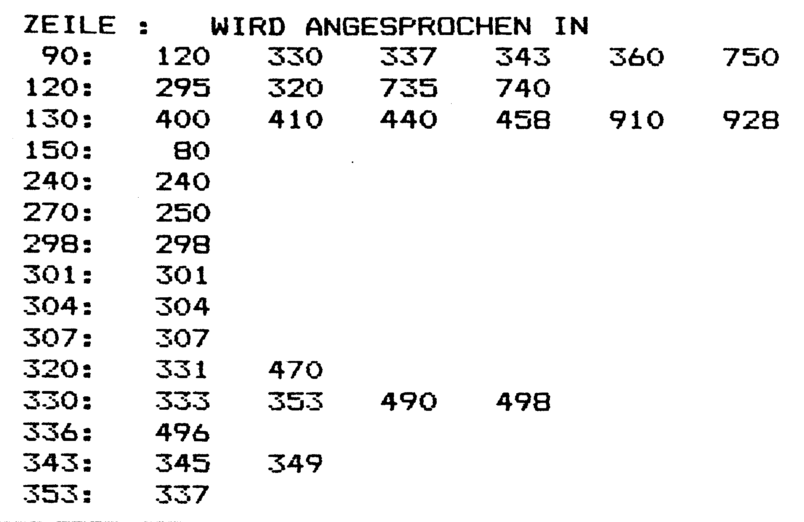
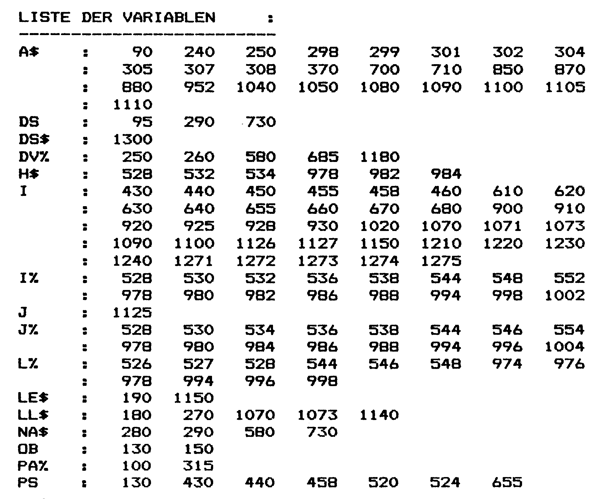

Cross-Referenz-Liste C128
Dieses Programm dient der Dokumentation von Basic-Programmen: Welche Zeilen werden angesprungen, wie ist die Belegung der Variablen?
Jeder Basic-Programmierer kennt das Problem: Man schreibt lange und komplizierte Programme und merkt, daß langsam, aber sicher, der Überblick verlorengeht.' Oder auch wenn versucht wird, ein fremdes, nicht selbsterstelltes Programm zu analysieren: Was bedeutet diese Variable, wo taucht sie im Programm noch auf? Von wo und wie oft wird diese Programmzeile angesprungen?
Bei gut strukturierten Programmen blickt man relativ schnell durch, aber die sind leider selten zu finden. Doch selbst dann ist eine gute Beschreibung eine hilfreiche Sache und erleichtert den späteren Wiedereinstieg.
Eine Cross-Referenz-Liste unterstützt bei der Erstellung einer Programm-Dokumentation. Gerade bei kommerziellen Software-Projekten wird nicht auf sie verzichtet. Sie enthält dabei nicht nur eine Aufzählung aller Sprünge (Bild 1 und 2), sondern auch eine komplette Variablenliste (Bild 3). Und genau dieses ist die Aufgabe dieses Programms:



1) Liste aller Zeilen, in denen Sprungbefehle enthalten sind. Angegeben wird die Zeilennummer und die angesprungene Zeile.
2) Liste aller Zeilen, die angesprungen werden. Angegeben sind die Zeilennummer und alle Zeilen, von denen aus diese Zeilen angesprungen werden.
3) Eine Liste aller im Programm vorkommenden Variablen. Angegeben wird, alphabetisch sortiert, der Variablenname und die Zeile, in denen die Variable vorkommt. Zusätzlich besteht die Möglichkeit, zu jeder Variable einen kurzen Kommentar einzugeben.
4) Liste aller Variablen mit dem oben erwähnten Kommentar, aber ohne Hinweise auf die Zeilen, in denen sie vorkommt.
Funktion des Programms
Das hier vorgestellte Programm arbeitet auf einem C 128 im 80-Zeichen-Modus mit den Floppy-Laufwerken 1541/70/71.
Nach dem Start durch RUN kann zwischen der Ausgabe auf Bildschirm oder Drucker gewählt werden. Anschließend fragt Sie das Programm nach dem Namen des Files auf Diskette, von dem die Dokumentation erstellt werden soll. Geben Sie hier den entsprechenden Namen ein.
Die folgenden Abfragen bedeuten:
Zeilenreferenz von — Ziel: Ausgabe aller Zeilen, in denen Sprungbefehle enthalten sind.
Zeilenreferenz Ziel - von: Ausgabe aller Zeilen, die angesprungen werden.
Variablen + Zeilennummern: Ausgabe einer Liste aller im Programm vorkommenden Variablen mit Angabe der Zeilennummern.
Variablen o. Zeilennummern: Ausgabe der Variablen ohne Angabe der Zeilennummern.
Des weiteren besteht die Möglichkeit, an die Variablen Kommentare anzuhängen.
Eingabehinweise
Das Programm »XRef« (Listing 1) geben Sie bitte im C128-Modus ein und speichern es auf Diskette. Danach können Sie es normal mit LOAD"'NAME'" ,8laden und über RUN starten. Die Bildschirmausgabe erfolgt im 80-Zeichen-Modus. Alle Disk-Basic-Befehle (zum Beispiel APPEND, BOOT oder BLOAD) werden bei der Evaluierung der Variablen berücksichtigt.
(Michael Bauer/dm)